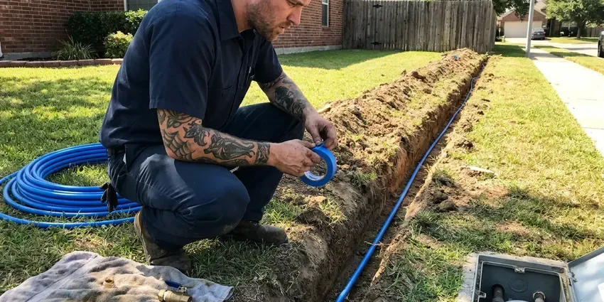
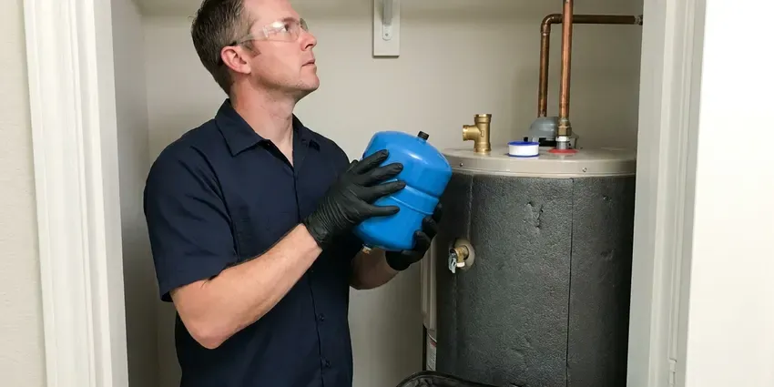

Water Softener Installation in White Plains, NY
Less scale, softer laundry and cleaner glass in your White Plains, NY home, from a new water softener.
- Clear Pricing
- Free Hardness Testing
- Labor Warranty
- Experienced New York Plumbers

Water Softener Installs in White Plains, NY
Call HCL Plumbing for a no-cost estimate on a whole-home softener.
Softener and Filter Installs in White Plains, NY
HCL Plumbing tests your water, recommends the system and installs it on your existing loop or a new one. We program the control valve, fill the brine tank with the right amount of salt and walk you through refills before we leave. It takes a few hours.
Some of what we do:
- Carbon filtration and salt-free units
- Loop installs and bypass valves
- Salt-based softeners with Fleck and Clack valves

Additional Plumbing Installation Services in White Plains, NY
We install water heaters, pumps, lines, and fixtures across White Plains, NY with careful, permitted work that passes inspection the first time.




Water Line Installation in White Plains


Customers
Why Choose HCL Plumbing for Water Softener Installation in White Plains, NY?
Hard water shortens the life of water heaters, dishwashers and faucets and leaves scale on shower glass. With the right softener in place, scale stops forming and cleaning gets easier. Appliances last longer too.
- Appliance Life, Shield your water heater, dishwasher and washer from mineral buildup.
- Softer Skin and Hair, Less hardness means less dryness after a shower.
- Proper Sizing, We size by grain capacity and daily use.
Citywide Coverage
From downtown White Plains to the outer suburbs, our technicians know the plumbing and water. That helps us install the right softener wherever you live.
Experienced Team
Our plumbers have installed many softener models in New York homes. Simple installs and full filter-plus-softener setups are both familiar work.
Safety-First Approach
Local plumbing code is followed on every softener we install. We confirm the drain and the electrical are safe and correct.
Trusted Certified White Plains Plumbing Services Professionals
At HCL Plumbing, we are proud to offer certified plumbing services throughout White Plains, NY. Those papers on the wall mean something. Our plumbers hold recognized industry credentials, and they follow strict safety and quality rules on every repair, installation and maintenance call we run.
Call Us Now PHCC Plumbing Contractor Recognition
PHCC Plumbing Contractor Recognition Better Business Bureau (BBB) Accreditation
Better Business Bureau (BBB) Accreditation Angi Certified Pro
Angi Certified Pro ISO 9001 Quality Management Certification
ISO 9001 Quality Management CertificationWater Softener Installs in White Plains, NY
Commercial Water Softener Installation in White Plains, NY
Restaurants, hotels and laundromats feel hard water in their equipment first. Commercial softeners we install use larger resin tanks or twin-tank alternating systems so soft water is available around the clock, even during regeneration. Dishwashers and boilers last longer. We schedule around your hours.

Pelican Water Softener Installation in White Plains, NY
Pelican sells both salt-based softeners and salt-free conditioners, often direct to homeowners. When a homeowner has already bought one, we handle the plumbing, the bypass and the startup flush the manual requires. Startup matters. We follow it step by step.
Whole-House Water Softener Systems in White Plains
On a whole-house system, the softener goes on the main line after the shutoff and before the water heater. We add a bypass valve so you can isolate the softener for service, and we install a pressure regulator if your street pressure runs above 80 psi. Soft water reaches every fixture. We can skip the hose bibs.
High-Efficiency Water Softener Installation in White Plains
High-efficiency softeners use upflow brining and metered valves to cut salt and water use. Compared with an older timer-based unit, a modern metered softener can use roughly half the salt and noticeably less regeneration water each month. That pays back over time. We install several models.
Fleck Water Softener Installation in White Plains, NY
Fleck valves, especially the 5600SXT and 7000SXT, are on a lot of the softeners we install. They are simple to program, easy to rebuild and parts are stocked almost everywhere, which matters when a seal fails ten years in. Settings match your test. We confirm the setup before leaving.
Residential Water Softener Installation in White Plains
Hard water costs homeowners money in shorter appliance life and extra cleaning. We test the water, ask about daily use and choose a capacity that lets the system regenerate roughly once a week. That keeps salt use reasonable. Every detail is handled on one visit.
Salt-Based Water Softener Systems in White Plains, NY
Salt-based softeners use ion exchange, swapping calcium and magnesium for sodium on a bed of resin beads. HCL Plumbing sets them up with the right resin and brine tanks. We program regeneration by metered water use so the system only recharges when the resin is actually spent, which saves a lot of salt. Most effective option.

Ecodyne Water Softener Installation in White Plains
Ecodyne softeners are sold at many home stores, and we install them for homeowners who already bought one. Install follows the manufacturer manual for bypass, drain and overflow, then we set hardness and regeneration. Bring your own unit. Programming is part of the job.
Water Softener Plumbers Near You in White Plains, NY
Our team knows local water and how hard water wears on plumbing. You get a recommendation that fits your use, a clean install and clear advice on upkeep. Simple upkeep.
Searching for water softener installation near me in White Plains, NY usually starts with scale on a new faucet. HCL Plumbing has crews nearby with test kits ready, which means a hardness test on the first visit and an install soon after. No charge for the test.
HCL Plumbing at a Glance
- Licensed and insured plumbers serving White Plains, NY
- 24/7 emergency service with same-day scheduling
- Upfront, flat-rate pricing before work begins
- 4.8-star rated by 520+ New York customers
White Plains Map
White Plains Information
- Population
- 61,288
- Area codes
- 914/845/347
- Service area
- White Plains and towns within a 40 mile drive
- Nearby
- New Rochelle, Yonkers, Mount Vernon, Hempstead
Water hardness in New York varies a lot, with many surface water supplies running soft and groundwater in some areas running mineral-heavy. A softener set up on the main line keeps that scale out of water heaters, pipes and fixtures in White Plains, NY.
Talk to a Plumber
Reach out to HCL Plumbing for honest, reliable plumbing from people who know the trade in White Plains, NY.
Our Specialized Plumbing Services in White Plains, NY
At HCL Plumbing, we handle the full list of plumbing services across White Plains, NY. We go from leak detection all the way to full system installations, for homes and commercial buildings, and we do it quickly at a fair price. Take a look at our core services below:


Our Water Softener Installation Steps in White Plains, NY
We follow a set order of steps so nothing gets missed.
Request a Quote
Contact us at (716) 396-7101 to set up a visit. We test your water and give you a detailed quote with no obligation.
System Selection
Our plumbers help you pick a softener based on hardness, use and budget.
Installation
Licensed plumbers install the softener, with all plumbing to code, then test it.
Frequently Asked Questions About Water Softener Installation in White Plains
Most White Plains, NY softener installs land between $1,500 and $4,000. That typically covers the unit itself and the labor to plumb it in, program it and test it, with any loop or drain work listed separately. Bigger homes cost more. We give written pricing up front.
A good softener usually lasts ten to fifteen years. Hardness, maintenance and build quality matter, and fresh resin can add years. Service helps.
Most homeowners are better off hiring a pro. A wrong connection can leak for weeks or leave the water just as hard as before. A plumber handles sizing and code.
A softener targets calcium and magnesium to stop scale. A filter removes things like chlorine and sediment to improve taste and safety, and plenty of homes use both together.
Salt-based softeners add a small amount of sodium. An RO unit at the kitchen sink takes it back out.
Less scale in pipes and appliances is the big one. You also get longer appliance life, lower soap use, softer skin and much easier cleaning. Clothes come out softer.
We install Culligan, Pelican, Fleck, Kenmore, Whirlpool and GE, among others. We help you choose the right brand and model for your water and budget.
Soap scum on shower doors, dry skin, dull laundry and white scale on faucets are the classic signs. We can run a hardness test in your home to confirm it, usually in a few minutes with a simple kit at the kitchen sink. Testing is free.
Hear From Customers Who Hired Our Plumbing Experts

Jessica T.
We were adding a gas range in a kitchen remodel and needed a new line run from the meter. The plumber pulled the permit, ran the pipe through the crawl space, and had it inspected and approved within the week.
Gas Line Repair · Yonkers, NYMonica A.
Our water bill nearly doubled in one month with no change in how we used water. The tech checked the meter, heard the leak under the hallway with his equipment, and opened a hole about a foot square. Fixed the same day.
Slab Leak Repair · New Rochelle, NY
Emily R.
The shutoff valve under our kitchen sink snapped off in my hand on a Sunday morning. HCL Plumbing had someone out by early afternoon. He replaced both angle stops with quarter turn valves and showed me where our main shutoff was, which I honestly did not know.
Plumbing Repair · New Rochelle, NY
Nathan E.
Our tankless heater kept throwing an error code and shutting off mid shower. The tech flushed the heat exchanger, which was full of scale, and replaced a bad flow sensor. Hot water has been steady for half a year now.
Water Heater Repair · Mount Vernon, NY
James P.
Our restaurant had a slow leak at the hand sink that was rotting the cabinet base. HCL Plumbing came in at six in the morning before prep, replaced the trap and both supply lines, and was packed up before my first cook clocked in.
Commercial Plumbing · Yonkers, NYDaniel K.
A pipe burst in the garage ceiling at 11 at night. Someone answered on the second ring, and the plumber was in my driveway about fifty minutes later. He shut off the main, cut out the split section, and had water back on before 2 am.
Emergency Plumbing · Yonkers, NY